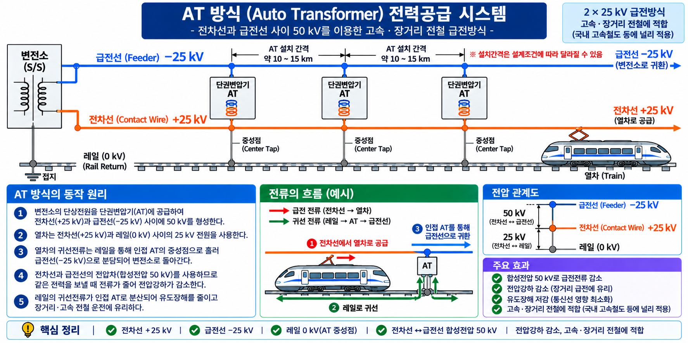
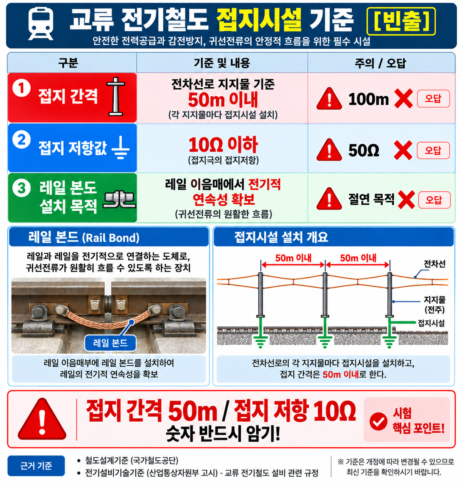

GATE5 · PART 09 · UNIT 09-03
BT급전 vs AT급전
흡상변압기 급전 / 단권변압기 급전 / 통신유도장애 감소
★★★ A등급
FINAL PUBLISH v1.2
기출 3문항
§0 선행 용어
BT (Booster Transformer, 흡상변압기)
귀선전류를 레일에서 귀선선(BT선)으로 끌어올려 통신유도장애를 줄이는 변압기.
AT (Auto Transformer, 단권변압기)
변압기 1차측과 2차측이 공통 권선을 공유하는 변압기. 변압비 1:1로 급전선·전차선 전압을 균형 유지.
급전선 (Feeder Wire)
AT급전에서 변전소에서 전차선과 반대 극성으로 설치되는 급전용 전선 (+25kV).
귀선전류 (Return Current)
전차선으로 공급된 후 열차가 사용한 전류가 레일 등 귀선회로를 통해 변전소로 되돌아오는 전류.
통신유도장애
전철 전류가 인근 통신선에 전자유도를 일으켜 잡음·오작동을 유발하는 현상. BT급전이 감소 효과 있음.
급전거리 (Feeding Distance)
변전소에서 전압강하 없이 전력을 공급할 수 있는 최대 거리. AT급전이 더 길다.
§1 BT급전 — 흡상변압기 급전
GATE4 SOURCE-95 / 4.html 개념95-A
BT급전 (흡상변압기 급전)
★★★
| 항목 | 내용 |
|---|---|
| 정식 명칭 | 흡상변압기 급전 (Booster Transformer Feeding) |
| 원리 | 귀선전류를 레일에서 귀선선(BT선)으로 흡상(끌어올림)하여 레일로 흐르는 전류를 억제 |
| 주요 효과 | 통신유도장애 감소 |
| 급전거리 | AT급전보다 짧음 (전압강하 크고 급전거리 제한) |
| 적용 사례 | 구형 전기철도 (AT급전 도입 이전) |
💡 BT급전 핵심 — 귀선전류를 레일→BT선으로 끌어올려 인근 통신선 유도 방지
단점: 변전소 간격(급전거리)이 짧아 시설 증가
단점: 변전소 간격(급전거리)이 짧아 시설 증가

§2 AT급전 — 단권변압기 급전
GATE4 SOURCE-95 / 4.html 개념95-B
AT급전 (단권변압기 급전)
★★★
| 항목 | 내용 |
|---|---|
| 정식 명칭 | 단권변압기 급전 (Auto Transformer Feeding) |
| 원리 | 급전선(+25kV)과 전차선(−25kV) = 합계 50kV 단권변압기(변압비 1:1)를 일정 간격으로 설치하여 전압 균등 유지 |
| 전압강하 | 적음 (BT급전 대비) |
| 급전거리 | BT급전보다 길어짐 (고속선에 적합) |
| 적용 사례 | KTX 표준 / 고속선 기준 |
💡 AT급전 핵심 — 단권변압기로 50kV 급전 → 전압강하 최소 → 장거리·고속선 표준
★ 우리나라 KTX = AT급전
★ 우리나라 KTX = AT급전

VIS-105 — AT급전 전력공급 시스템 (변전소→급전선·전차선 50kV 구성)
§3 BT급전 vs AT급전 비교
GATE4 SOURCE-95 / 4.html 개념95
두 방식 한눈에 비교
★★★
BT급전
Booster Transformer Feeding
• 귀선전류를 레일→BT선으로 흡상
• 통신유도장애 감소 효과
• 급전거리 짧음
• 구형 전기철도 적용
• 통신유도장애 감소 효과
• 급전거리 짧음
• 구형 전기철도 적용
AT급전
Auto Transformer Feeding
• 급전선+전차선 = 합계 50kV
• 전압강하 적음
• 급전거리 길어짐
• KTX 표준
• 전압강하 적음
• 급전거리 길어짐
• KTX 표준
| 비교 항목 | BT급전 | AT급전 |
|---|---|---|
| 명칭 | 흡상변압기 급전 | 단권변압기 급전 |
| 변압기 | 흡상변압기 (BT) | 단권변압기 (AT) |
| 급전전압 | 25kV | 급전선·전차선 합계 50kV |
| 통신유도장애 | 감소 효과 | 별도 저감 장치 필요 |
| 전압강하 | 큼 | 적음 |
| 급전거리 | 짧음 | 길어짐 |
| 적용 | 구형 전기철도 | 고속선 / KTX 표준 |
⚠️ 핵심 함정 — "BT급전이 급전거리가 길다" → 틀림
급전거리 긴 것 = AT급전 / 짧은 것 = BT급전
⚠️ "AT급전이 통신유도장애 감소에 우수" → 잘못된 연결. 통신유도장애 감소 = BT급전
급전거리 긴 것 = AT급전 / 짧은 것 = BT급전
⚠️ "AT급전이 통신유도장애 감소에 우수" → 잘못된 연결. 통신유도장애 감소 = BT급전

접지시설 설치 기준 카드 (SOURCE 09)

VIS-079 급전방식 BT·AT·직접급전 비교 (SOURCE 09)

교류 전차선로 접지시설 기준 60V·150V (SOURCE 09)
§4 시험 포인트 · 함정
🎯 핵심 암기 포인트
- BT급전 = 흡상변압기 / AT급전 = 단권변압기
- 통신유도장애 감소 효과 = BT급전
- 전압강하 적음 + 급전거리 길어짐 = AT급전
- KTX 적용 방식 = AT급전
- AT급전 급전선+전차선 합계 = 50kV
| 함정 유형 | 오답 선택지 | 정답 방향 |
|---|---|---|
| AT/BT 특징 반전 | "BT급전이 급전거리 길다" | 급전거리 긴 것 = AT급전 |
| 통신유도 주체 반전 | "AT급전이 통신유도장애 감소" | 통신유도장애 감소 = BT급전 |
| 변압기 명칭 혼동 | "AT급전 = 흡상변압기" | AT = 단권변압기 / BT = 흡상변압기 |
| KTX 연결 혼동 | "KTX = BT급전" | KTX = AT급전 |
§5 기출문제
Q1
전압강하를 줄이고 급전거리를 늘리는 데 유리한 급전방식은?
- 직접급전방식
- BT급전방식
- AT급전방식
- 직류급전방식
Q2
교류 전기철도에서 귀선전류를 흡상(吸上)하여 통신유도장애를 줄이는 목적으로 사용되는 변압기는?
- 단권변압기(AT)
- 흡상변압기(BT)
- 변류기(CT)
- 계기용 변압기(PT)
Q3
AT급전방식에서 급전선(F선)과 전차선(T선)의 전압 구성으로 옳은 것은?
- 급전선 +25kV, 전차선 +25kV (합계 50kV)
- 급전선 +25kV, 전차선 −25kV (합계 50kV)
- 급전선 −25kV, 전차선 −25kV (합계 50kV)
- 급전선 +50kV, 전차선 0kV (합계 50kV)
§6 정답 · 해설
Q1 정답
③ AT급전방식
AT(단권변압기)급전은 일정 간격으로 단권변압기를 설치해 전차선-급전선 간 전압을 균등하게 유지하므로 전압강하가 적고 급전거리가 길어진다. 우리나라 고속선(KTX)에 표준으로 적용된다.
⚠️ 오답함정: "BT급전이 급전거리가 길다"는 반대. BT급전은 급전거리가 짧다.
Q2 정답
② 흡상변압기(BT)
BT(Booster Transformer, 흡상변압기)급전은 귀선전류를 레일에서 귀선선(BT선)으로 흡상해 통신유도장애를 줄인다. 단, 급전거리가 짧아지는 단점이 있다.
⚠️ 오답함정: AT(단권변압기)는 전압강하 감소 목적이며 통신유도장애 감소는 BT급전의 특징.
Q3 정답
② 급전선 +25kV, 전차선 −25kV (합계 50kV)
AT급전은 급전선(F선) +25kV와 전차선(T선) −25kV의 합계 50kV로 구성되며, 단권변압기(1:1 변압비)로 균등하게 유지한다.
⚠️ 오답함정: "둘 다 +25kV"는 오답. 극성이 반대여야 50kV 공급이 성립된다.